注意事項
此版本為 TFS 2017 .
!! 重要，基本上使用自簽憑證還是會有風險，所以在正式環境底下，還是建議使用正式的憑證。
!! 注意，這邊只實作 TFS ，如果有需要和 SharePoint、Repoet Service 整合，請參考底下的 MSDN 連結
前言
在 TFS 2017 安裝的時候就已經可以使用精靈來完成自簽憑證與 SSL 提供對外的服務，
而如果已經裝完後哩?
那又該怎麼辦哩，所以這篇我們來看看，如何在安裝完後，還能使用自簽憑證與 SSL 提供對外服務。
開始之前
因為這次會圍繞在憑證上，所以我們必須先知道如何快速地看到我們有哪些憑證，
甚至是管理憑證。
首先，我們可以透過搜尋工具，搜尋 MMC 。
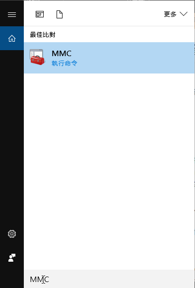
接著，我們可以執行 新增/移除嵌入式管理單元
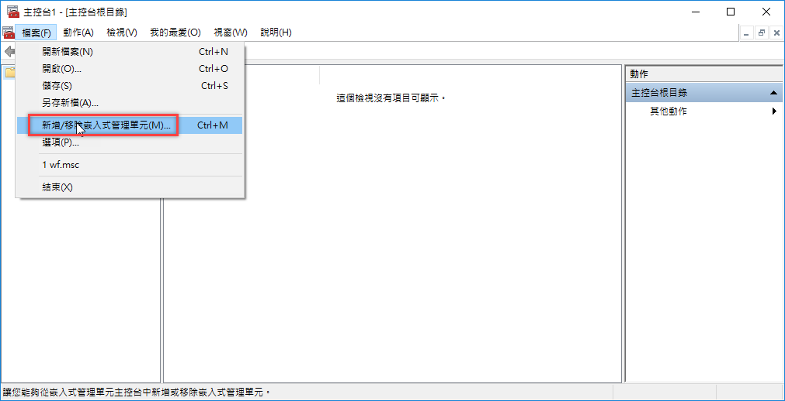
然後我們選擇憑證，並按下新增。
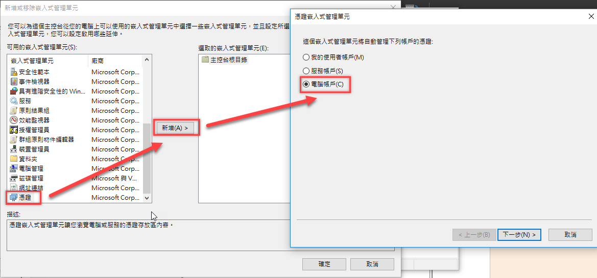
接下來，按下一步就可以了，完成後，就可以看到目前這台電腦上的所有憑證。
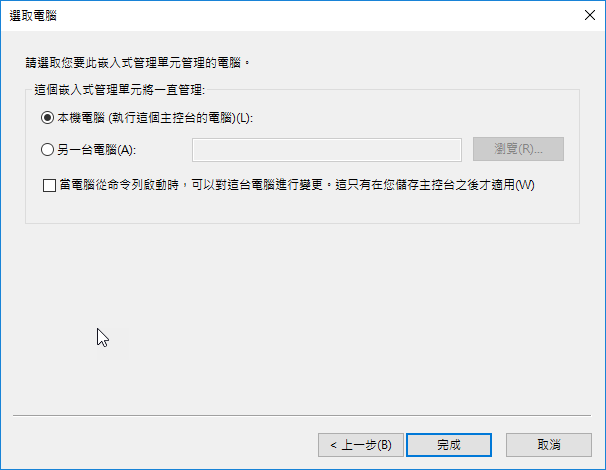
建立憑證
竟然要使用 SSL，自然就要使用憑證嚕，所以我們要先建立憑證。
這邊使用 makecert.exe 來建立，通常這個會在底下路徑，
C:\Program Files (x86)\Windows Kits\10\bin\x86
如果沒有的話，就要去安裝 Windows Kits。
如果懶得去找 Windows Kits，或是不想裝那麼大一包，也可以直接將 makecert.exe
copy 到 server 上執行。
基本上，我們只需要下以下命令。
1 | makecert -r -pe -n "CN=對外網址" -b 01/01/2016 -e 01/01/2020 -sky exchange -a sha256 -len 2048 -ss root -sr localMachine |
-n 後面要接上對外網址，不然到時候瀏覽器會出現警告，
而 ss 後面代表要放到 受信任的根憑證授權單位
sr 代表是放到 本機電腦；可以參考下圖
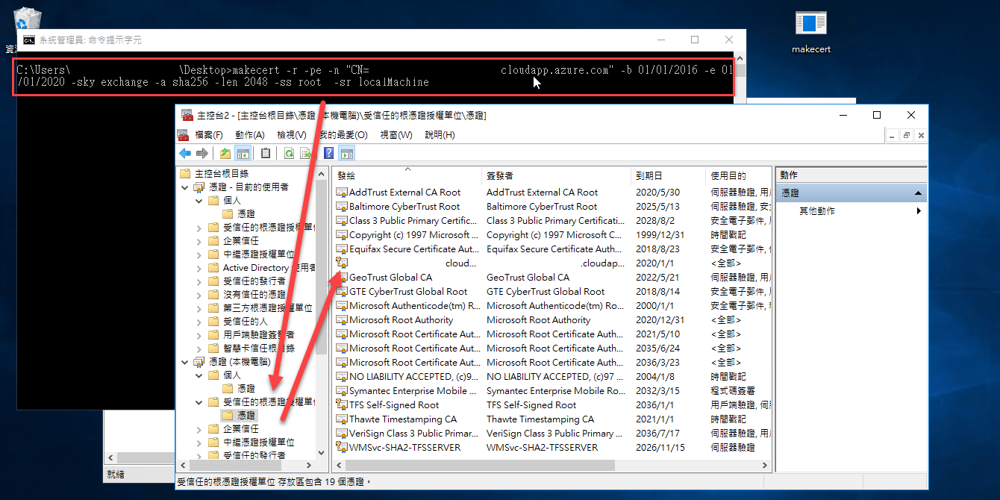
接下來，我們稍微挑整一下憑證的用途。
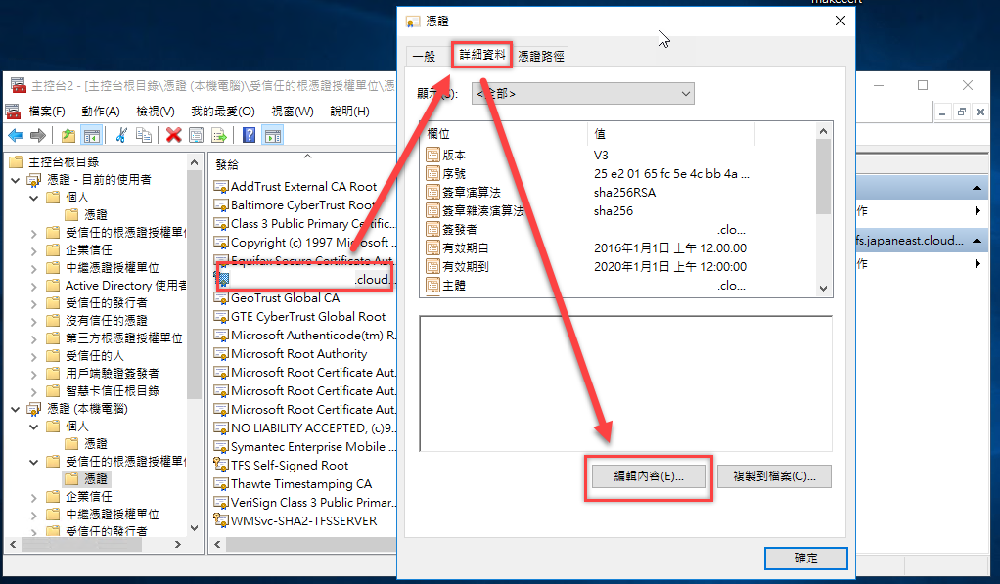
因為只需要提供驗證，所以勾底下的就可以了，
另外，易記名稱記得要 Key，到時候 IIS 上的顯示，就是會顯示這邊。
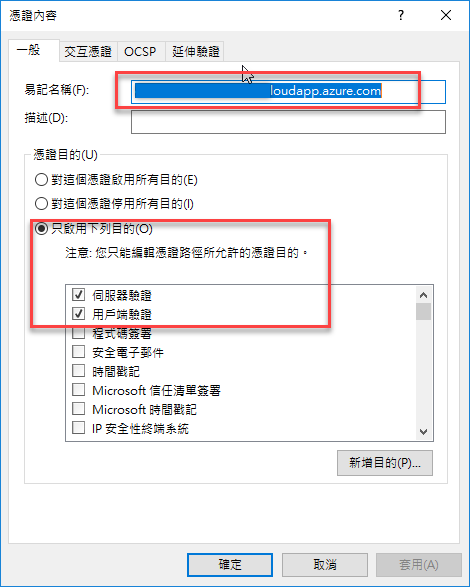
IIS 使用憑證
當有了憑證後，我們就可以讓 IIS 使用此憑證。
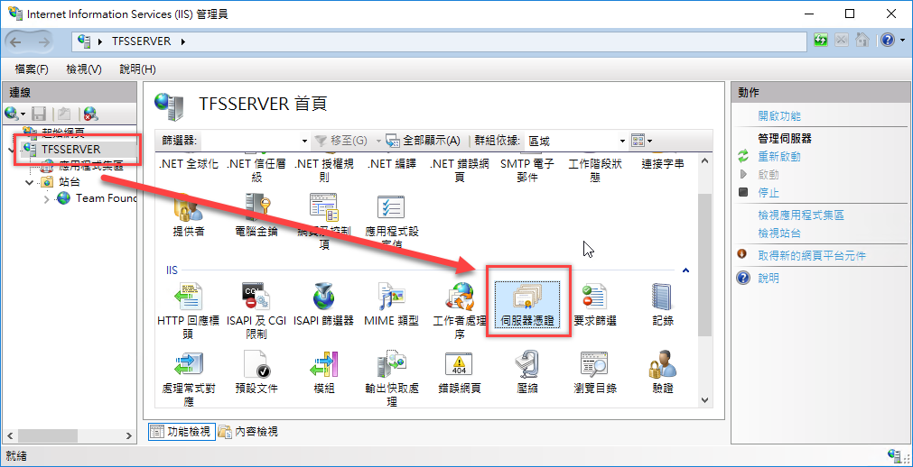
接下來，我們就將此憑證匯入，在這邊匯入的是剛剛我們建立的憑證，副檔名為 .pfx
如果找不到 .pfx 的話，也可以從憑證管理員的地方進行匯出。( 不是下圖的地方匯出喔! )
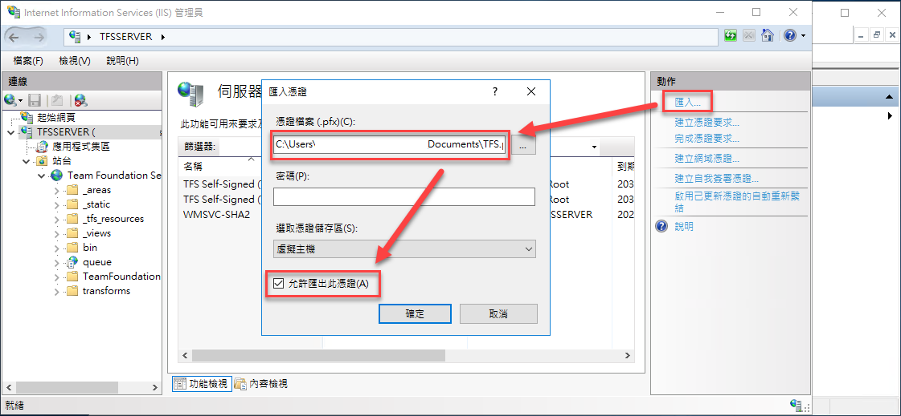
接下來，我們就要把站台與憑證繫結。

最後，在這邊把 https 加上。
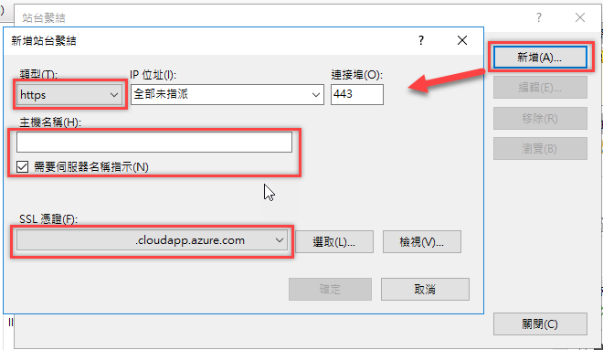
接下來，回到 TFS 的 設定畫面，我們就可以變更公用 URL，
而這邊要注意，有可能因為 Windows Server 預設的安全機制，造成驗證失敗。
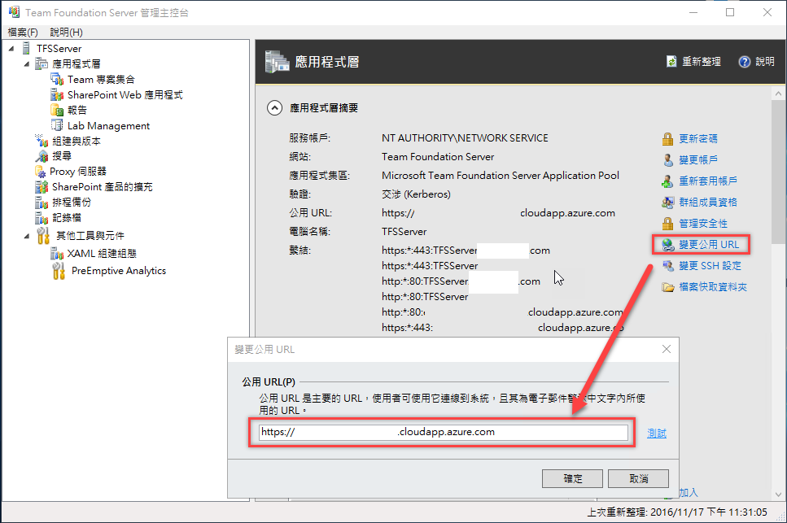
關於驗證失敗，可以參考底下三篇
- http://blog.darkthread.net/post-2016-04-16-check-auth-method-of-browser.aspx
- https://support.microsoft.com/en-us/kb/896861
- http://blog.darkthread.net/post-2016-05-18-use-cust-name-logon-local-iis.aspx
或是於底下的註冊碼進行修改。
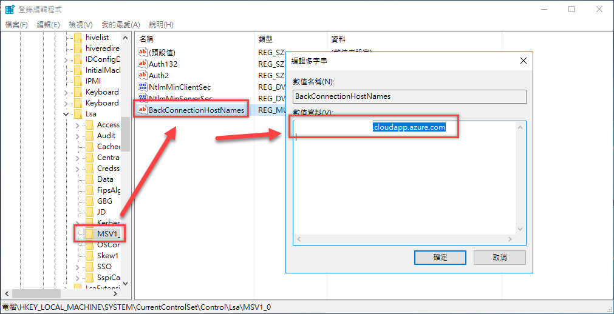
匯出憑證提供給其他電腦
接下來，我們要把一開始放到根信任憑證授權單位的憑證，進行匯出，並且到時候這個會提供給 Client 使用；
這邊，我們只要選擇之前的那個憑證，並且按下滑鼠右鍵，就可以從選單裡面找到匯出，
之後，於跳出的視窗中，選擇不要匯出私密金鑰，並且選擇 .P7B 格式，最
後步驟則是選擇要匯出到哪個位置 ( 因為步驟滿簡單的，小弟就不截圖了 )
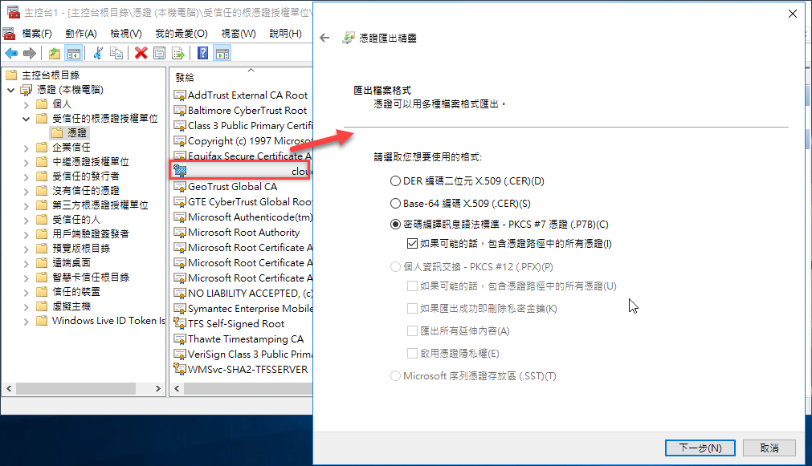
接著，將匯出的憑證，用盡各種手段，複製到 Client 的機器上；這次我們就要在 Client 上打開 mmc ；
接著在 受信任的根憑證授權單位底下，按滑鼠右鍵，選擇匯入。
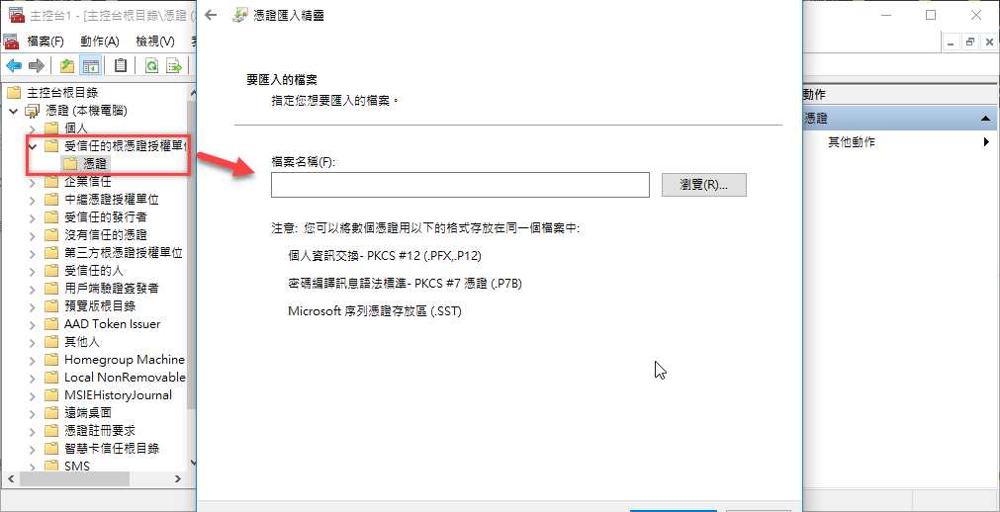
這樣就完成了!!
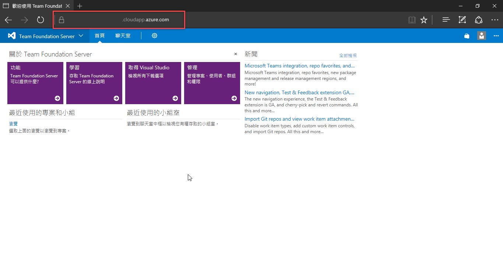
後記
其實過程還滿簡單的，不過這邊的設定僅 TFS 那台 Server 而已，
如果要連到 SharePoint 或是 ReportService ，會變得麻煩許多，
另外如果額外有 Build Server，也別忘記要把憑證匯進去喔~
參考資料
- https://www.visualstudio.com/zh-tw/docs/setup-admin/websitesettings
- https://msdn.microsoft.com/en-us/library/aa833872(v=vs.140).aspx
- http://blogs.uuu.com.tw/Articles/post/2013/02/06/%E4%BD%BF%E7%94%A8X509%E6%86%91%E8%AD%89%E5%8A%A0%E8%A7%A3%E5%AF%86.aspx
- https://msdn.microsoft.com/zh-tw/library/bfsktky3(v=vs.90).aspx
- http://vmiv.blogspot.tw/2016/03/makecertexessliis10.html
- https://msdn.microsoft.com/library/windows/desktop/aa386968.aspx
- https://msdn.microsoft.com/zh-tw/library/ms733813(v=vs.110).aspx